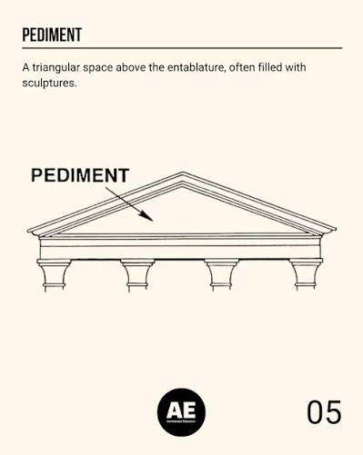

Stop 11 · Clue
✦
The Figured Flask
European Decorative Arts · Gallery 706 · 2nd Floor
◈
Your Clue
For these secret groups, numerology and geometry go hand in hand. 2 is represented by pillars. The number is represented by the triangle, or sometimes the pediment. For the Freemasons, this number/shape represents divine perfection and stability.
Enter the answer to proceed
You really need a hint on how many sides are in a triangle?